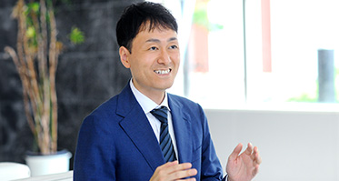

代表カウンセラー
井上 直人
「結婚相談所の敷居を下げたい」という想いから、結叶を開業。 自身も婚活経験者として、活動中の迷いや不安に寄り添いながら、 会員様が自然体で前に進めるようサポートしています。
プロフィール作成、会話、服装、デートの振り返りまで、 男性目線で具体的に相談できることが結叶の強みです。
全国オンライン対応 / 30代・40代の婚活
結叶（ゆいと）は、異性との会話や関係性の構築に不安がある方のための婚活相談所です。 オンラインを中心に、プロフィール作成からデートの振り返りまで親身になってサポートします。
About
婚活では、条件の整理だけでなく「自分をどう伝えるか」「会った後にどう関係を育てるか」が大切です。 結叶では、全国どこからでもオンラインで相談できる体制を整え、活動中の迷いや不安を一つずつ言葉にしていきます。
事務所は大阪にありますが、現在はオンライン相談を中心に全国対応へシフトしています。 忙しい方や近くに相談所がない方も、無理なく婚活を始められます。
Profile
代表カウンセラー
「結婚相談所の敷居を下げたい」という想いから、結叶を開業。 自身も婚活経験者として、活動中の迷いや不安に寄り添いながら、 会員様が自然体で前に進めるようサポートしています。
プロフィール作成、会話、服装、デートの振り返りまで、 男性目線で具体的に相談できることが結叶の強みです。
サロン情報
面談はオンラインを中心に全国対応。大阪近郊の方は、必要に応じて個別にご相談ください。
News
お知らせを読み込んでいます。
Reason

男性目線で、プロフィール、服装、会話、デートの振り返りまで具体的に助言します。 恋愛経験に不安がある方も、相談しやすい距離感で進められます。
移動時間をかけずに、自宅から相談できます。 大阪近郊に限らず、全国の方が仕事や生活のペースに合わせて婚活を進められます。
「人と人とをつないで幸せにする」という想いを大切に、 条件だけでなく価値観や将来の暮らし方まで一緒に整理します。
Support
年齢や条件だけで判断せず、暮らし方・会話の相性・大切にしたい価値観まで一緒に掘り下げます。
写真選び、自己紹介文、初回デートの話題まで、相手に伝わりやすい形へ実践的に整えます。
全国どこからでも相談可能。仕事終わりや休日にも活動を振り返り、次の一歩を決めていけます。
Price
トライアル
まずは結婚相談所を利用してみたい方へ。
おすすめ
紹介や面談も受けながら安心して活動したい方へ。
ライト
初期費用を抑え、自分のペースで進めたい方へ。
自分自身を磨きながら理想の相手と出会いたい男性向けの伴走型コースもあります。詳細は無料相談でご案内します。
表示価格はすべて税込です。プラン内容は変更になる場合があるため、正式なお申込み前に最新条件をご確認ください。
Online First
初回相談、活動方針の整理、プロフィール添削、交際中の振り返りまでオンラインで対応。 必要な時に相談できる距離感で、婚活を一人で抱え込まない状態をつくります。
Flow
現在の婚活状況や恋愛の不安、仕事や生活のペースを伺い、あなたに合う婚活プランを一緒に整理します。
必要書類の確認、プロフィール作成、写真や身だしなみの準備まで、活動前の土台づくりをサポートします。
登録会員ネットワークを活用しながら、条件だけでは分からない雰囲気や価値観も踏まえてお相手探しを進めます。
日程調整や事前準備をサポート。会話や身だしなみなど、お見合い前の不安も一つずつ整えます。
交際中の悩みやデート後の振り返りを相談しながら、関係性を深めるための次の一歩を考えます。
プロポーズのタイミングや結婚に向けた準備まで、双方が納得して進めるよう最後まで伴走します。
FAQ
はい、無料で承っております。現在の婚活状況や不安なことを伺い、 結叶でどのようなサポートができるかをご提案します。
強制的な勧誘はありません。ご質問や不安、婚活に対する希望を整理したうえで、 ご自身で納得して判断いただけるようにしています。
30代・40代を中心に、20代から70代まで幅広い年代の方が活動されています。 仕事が忙しい方、職場で出会いが少ない方など、真剣に結婚を考える方が多くいらっしゃいます。
基本の料金プランに沿ってご案内します。活動内容によって確認が必要な場合もあるため、 無料相談時に希望する進め方とあわせて詳しくご説明します。
大丈夫です。婚活未経験の方も多く、プロフィール作成、会話準備、 デート後の振り返りまで一つずつサポートします。
お見合いが成立した後、日程や場所の調整をサポートします。 お見合い後も交際を希望するかどうかを確認し、次の進め方を一緒に考えます。
身分証明書、独身証明書、収入証明書、最終学歴証明書、登録用写真などが必要です。 必要書類は状況により異なるため、手続き前に個別にご案内します。
Voice
Free Consultation
「恋愛経験が少ない」「会話に自信がない」「婚活を何から始めればいいか分からない」。 そんな状態でも大丈夫です。無料相談で、今できる一歩を一緒に見つけましょう。